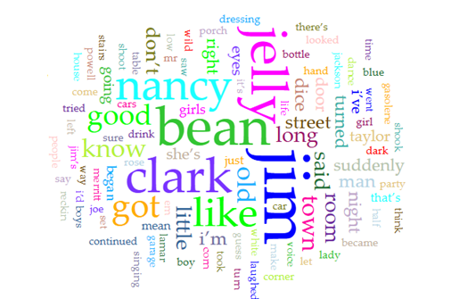
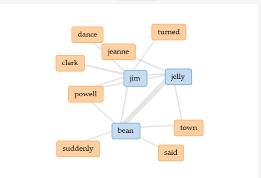
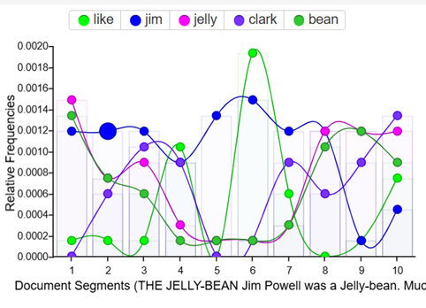
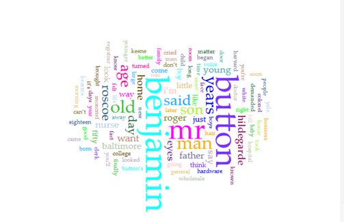
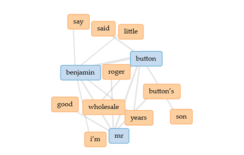
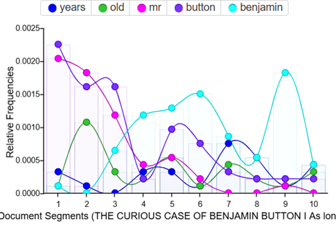

Week 6 – Text & Distant Reading
The Artifact
Make 5: Compare Voyant vs GPT Text Analysis
For my analysis, I decided to compare two texts from the collection Tales of the Jazz Age (1922) by F. Scott Fitzgerald: "The Jelly-Bean" and "The Curious Case of Benjamin Button." Both of these appear in the same collection but feature different styles of writing and storytelling. By analyzing both of these using both Voyant Tools and ChatGPT, I hope to highlight some of these differences while debating the validity of the AI's choices.
"The Jelly-Bean"
Voyant Analysis:
Word Frequency:

Links:

Trends:

ChatGPT Analysis Summary:
Historically, "The Jelly-Bean" by F. Scott Fitzgerald reflects the social changes after World War I, including the rise of leisure culture, partying, and shifting class structures in the American South following the decline of old Southern families after the American Civil War.
Symbolically, the term "Jelly-bean," Jim's gambling with dice, and Nancy Lamar herself represent wasted potential, reliance on luck instead of effort, and the illusion of glamour and social status that ultimately highlights Jim's loneliness and lack of purpose.
"The Curious Case of Benjamin Button"
Voyant Analysis:
Word Frequency:

Links:

Trends:

ChatGPT Analysis Summary:
The Curious Case of Benjamin Button is set in 1860 Baltimore before the American Civil War, reflecting a society that valued family reputation, strict social norms, and the growing influence of modern institutions like hospitals and universities such as Yale University. Benjamin's reverse aging symbolizes how society judges people based on appearance and expected life stages, showing how identity, maturity, and acceptance are shaped more by social expectations than by reality.
Reflection
Both the ChatGPT and Voyant analyses provide a decent version of distant reading, however, they each perform different functions. One important distinction to note is that Voyant primarily acts as a tool to be used in accordance with analysis whereas ChatGPT acts as a tool that does the bulk of analysis for you. Because of this, there can be two different interpretations to the question "What do we gain and what do we lose when machines 'read' literature for us?"
Voyant gives a very "cut-and-dry" approach to doing distant reading. It only looks at the text as data, taking words and associates "meaning" by looking at frequency and groupings. In doing so, you can get a very useful set of data that can allow you to analyze a large text in a very minimal amount of time (like noticing how Fitzgerald relies heavily on the repetition of the main character's name in his writing). However, in doing so, we lose the ability to interpret meaning and language choices that the original author intended. On top of this, Voyant ignores certain words like "I," which doesn't seem very important at first, but in works of poetry, the use and repetition of "I" is often a very important literary device.
ChatGPT, on the other hand, attempts to do what Voyant doesn't by providing background information and a good summary of the text. However, by exclusively using it to read, you can't understand the nuances of a text in a way that you would have if you read it traditionally. However, some of this can be negated by using it in addition to Voyant and other distant reading tools. Essentially, Voyant establishes meaning through repetition and ChatGPT establishes meaning through "broad points" that many people have made online.
Attribution & AI Use
Texts Used:
- Fitzgerald, F. Scott. 1922. "The Jelly-Bean." In Tales of the Jazz Age. Published 2004.
- Fitzgerald, F. Scott. 1922. "The Curious Case of Benjamin Button." In Tales of the Jazz Age. Published 2004.
- Both sources were obtained from Project Gutenberg
Tools Used:
- Voyant-tools (voyant-tools.org)
- ChatGPT (chatgpt.com)
GPT Prompts:
For both texts:
- I copied and pasted the texts into ChatGPT
- "Provide me with a historical analysis of this text"
- "Provide me with a sentiment analysis of this text"
- "What is the symbolism in this text"
- "Give me a 2 sentence summary of this information"
What Each Tool Could Not Do:
Voyant:
Voyant could not give summary or background information. It also couldn't read the text for you or provide you any information other than the data it collects and displays, leaving the "thinking" to the user.
ChatGPT:
ChatGPT could not bring out words in a similar format to Voyant, and when I tried asking for it to give a count of the word "Jelly" in "The Jelly-Bean" it came up with a different answer than Voyant, showing a hallucination on something as simple as hitting "ctrl + F" on a document. ChatGPT also couldn't really give much new insight as it is only pulling from sources that are readily available online.